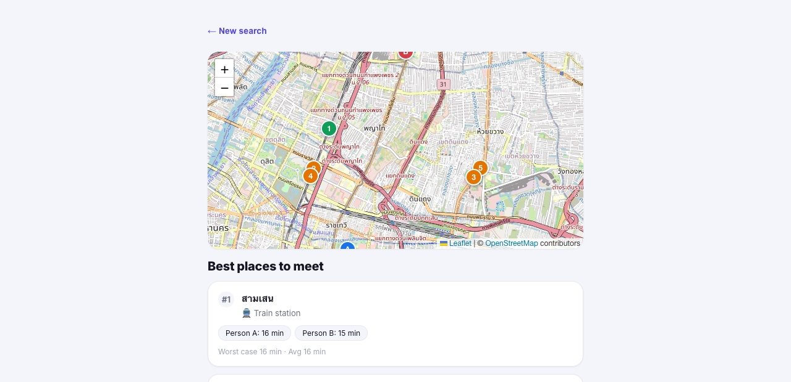
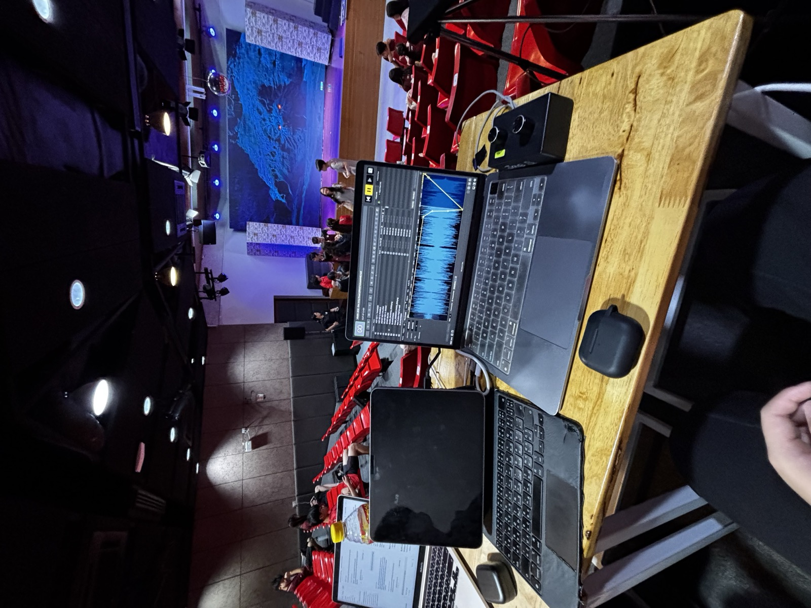
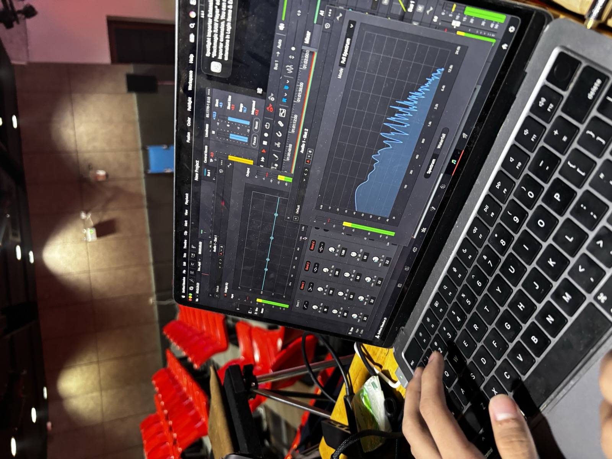

A fully automated content channel producing fun-fact videos on science and trivia topics. Built an end-to-end pipeline — GPT generates scripts, ElevenLabs handles voice narration, and an automation tool assembles the final video — requiring no manual editing per episode.
visitor@kenta-site:~$ whoami
Intouch Kenta Takizawa
_
Year 10 · Satit Prasarnmit International Programme (Secondary) · Bangkok
01 about
Kenta Takizawa is a Year 10 student at SPIP (Bangkok) with a passion for engineering, music, and theatre production. He's heading into his IGCSEs with Biology, Chemistry, Physics, Computer Science, Literature, Psychology, and Music.
He currently serves as Tech Director for his school's theatre program, leading production for Mean Girls after previous roles as Projection Technician (Aladdin) and House Usher (Hakuna Matata).
A multi-instrumentalist who plays guitar and drums, Kenta also likes to freestyle rap in his spare time. He also enjoys playing chess and used to compete. He's building toward a future in biomedical and aerospace engineering, with interests spanning coding and filmmaking. He is half Thai, half Japanese.
02 skills
Music Production
GarageBand
Instruments
Guitar
Drums
Video & Film
CapCut
Filmmaking
Documentary Production
Programming
Python (basic)
Scratch
Theatre Technical Direction
Lighting (basic)
QLab
Projection Systems
Web / App Development
OpenStreetMap
OSRM
API Integration
AI-Assisted Development
Claude
ChatGPT
Gemini
Comfortable using AI tools for debugging, research, and iterating on technical problems.
03 projects
ZOMBIE Invader
scratch.mit.edu ↗A zombie survival game built in Scratch (currently in open beta), exploring early programming logic and game design.

Midpoint
GitHub ↗Passion project — finds a fair, convenient meeting spot for two or more people using OpenStreetMap and OSRM for real travel-time ranking.
AlgosTheComic
A channel making fun fact videos that are interesting. Peaked at 10K views on YouTube and 4,421 views on Instagram.
04 experience
Current
Tech Director
CurrentMean Girls — School Theatre Production
Leading the technical production team, overseeing lighting, projection, and show control.
After learning projection, I wanted to understand the whole system, not just my one piece of it. Lighting, sound, QLab, all of it, seeing how everything connects is what actually interests me, and that's what pushed me to take on the Tech Director role for Mean Girls.
When we started, our team was only 4 people, and shortly after one member left, which left the rest of us struggling to keep up. I didn't want future members to go through that same struggle, so a big part of why I wanted this role was to build a more stress free environment for the team. As Tech Director I'm responsible for whether the entire technical side works, not just one station, and I like that a lot more than just doing a single task. Part of why I wanted this role is training the next generation of the team too, so the program keeps running well after I leave. I want to leave the tech program stronger than I found it, not just hold the title.
Be My Eyes Volunteer
Current · since Jul 4, 2026Be My Eyes
Volunteers on video calls to help blind and low-vision users with everyday tasks.
Past
Student Council
2023–2024 Academic YearSPIP — School Student Council
Served as a member of the school's student council.
House Usher
Jun 11–12, 2025Hakuna Matata — School Theatre Production
Supported front-of-house operations and audience experience.
Tech Team Lead & Projection Technician
Jun 11–12, 2026Aladdin — School Theatre Production
Led the tech team and operated projection systems to support live scene design and staging.
Watching Hakuna Matata as a House Usher, I got to see the tech side of the production up close for the first time, and it sparked something in me. I found myself way more interested in how the show was being run technically than I expected, and that's what pulled me toward becoming a Projection Technician for Aladdin.
I've always been drawn to how technical show control works, projection, timing, cues, since it's basically engineering happening live with zero room for error. Projection also sits right between the creative side of a show and the technical side, so it's not just art and not just hardware, it's both, and that overlap is exactly what I find interesting. This was also the first time I was trusted with real systems where a mistake would actually show, live, in front of an audience, and instead of stressing me out, that pressure made me want to get better at it.


05 academic achievements
Top of Year — Japanese
2024–2025Top of Year — Financial Literacy
2024–2025Japanese Category — Eastern Language Interhouse
May 27, 20261st place (out of 4 teams)
Competed representing his house in the Japanese category, drawing on his Japanese heritage.
06 music
Multi-instrumentalist playing guitar and drums. Likes to freestyle rap in his spare time.
- May 22, 2026 Performed as drummer with Green Shecktors at a rock concert event at his school.
- May 16, 2026 Performed as drummer with Green Shecktors at a concert at his school.
- Mar 19, 2026 Performed with his band Green Shecktors (formerly BadiohLeg) at Mall Bangkae.
07 chess
Enjoys playing chess and used to compete in tournaments.
Kings College Chess Tournament
2025Kings College — School Team
- Overall team placement: below 3rd place
- Overall individual placement: 12th–18th
Pattana Chess Tournament
Nov 1, 2025School Team & Individual Tournament
- 6 games — 4 wins / 2 losses
- Faced 2 FIDE-rated players (1 win / 1 loss)
- Overall team placement: 3rd place
- Overall individual placement: 4th place
GBAC Chess Tournament
Jan 1, 2026Brighton College — School Boys' Team, 8–12 schools competing
- 5 games — 4 wins / 1 loss
- Team finished 1st place overall
Kings College Chess Tournament
Feb 1, 2026Kings College, Thailand — 280 competitors
- 6 games — 4 wins / 2 losses
- Faced the national champion of Thailand (loss)
- Faced 3 FIDE-rated opponents (1 win / 2 losses)
- Finished 3rd place overall (4/6)
08 looking ahead
Building toward a future in biomedical and aerospace engineering, with continued interests in coding and filmmaking.